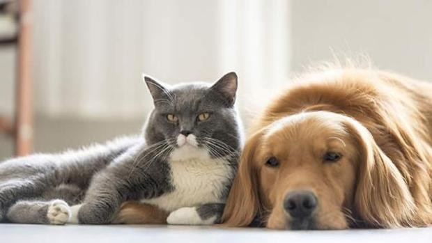
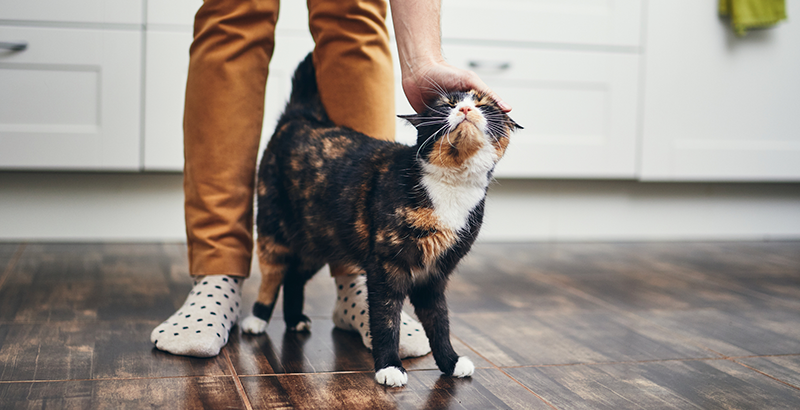
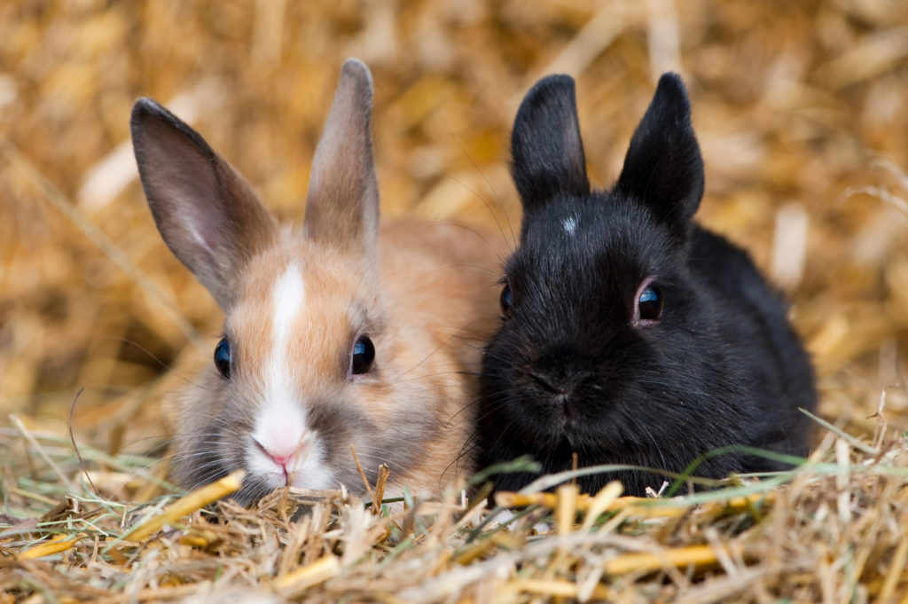
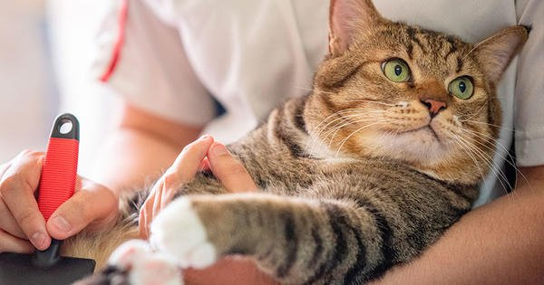

| Nuestros servicios en la Vete: | Más Detalles de nuestras lineas de servicio |
| Venta de animales | El regular la crianza de animales promueve el ejercicio de la misma en un esquema de bienestar integral, además de ser una estrategia indirecta para el control de animales en situación de calle.Click aquí |
| Venta de alimento | Tenemos para todo tipo de animales como el de perros, gatos, conejos, hamsters y caballos.Click aqui |
| Venta de accesorios | Todos los accesorios que vendemos en la tienda son hechos en Costa Rica Click aquí |
| Servicios de Doctor | Para cualquier consulta con el doctor es necesario hacer cita previa por el whatsup Click aquí |